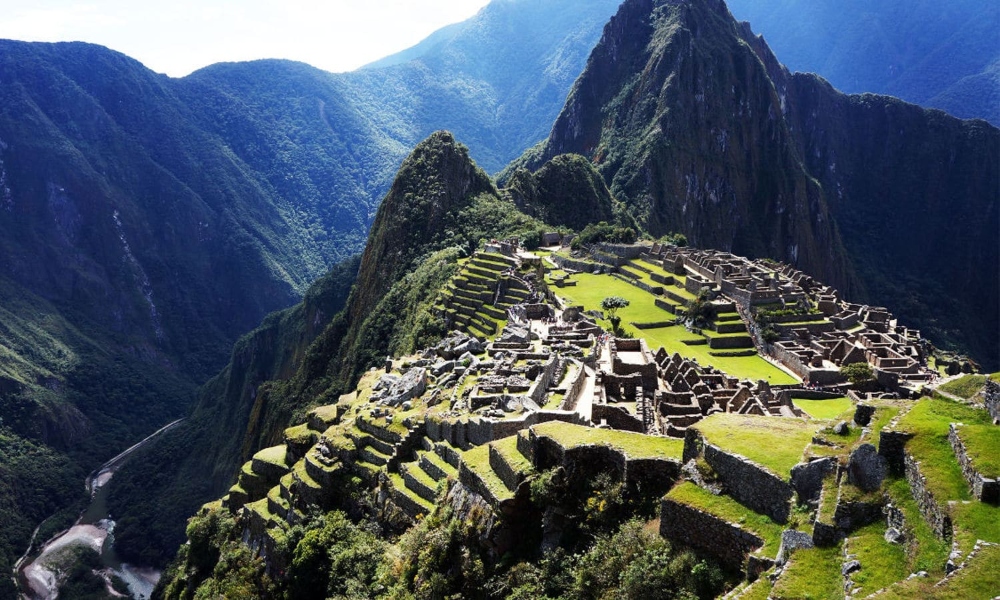

Machu Picchu
OVER ONE MILLION VISITORS IN 2016
Machu Picchu is a pre-Columbian Incan settlement,
one of the few that remain intact. Situated on the
eastern slope of the Andes Mountains, it was probably
built as a royal retreat for the Incan emperor Pachacuti Inca
Yupanqui, not intended to be visited by the masses. In use from
the mid-15th century to the mid-16th century, it was eventually
abandoned, although the reason is not clear.
Though the Incan empire was conquered by the Spanish in
1532, the conquistadors did not find the site; it was eventually
“discovered” in 1911. The architecture was integrated into the
natural terrain, its walls and terraces cut into the rock. Today,
it is reached either by hiking up the Incan trail through the Andes
or by train.In order to better preserve the structures, the Peruvian government has started to limit the amount of time tourists may spend at the site.